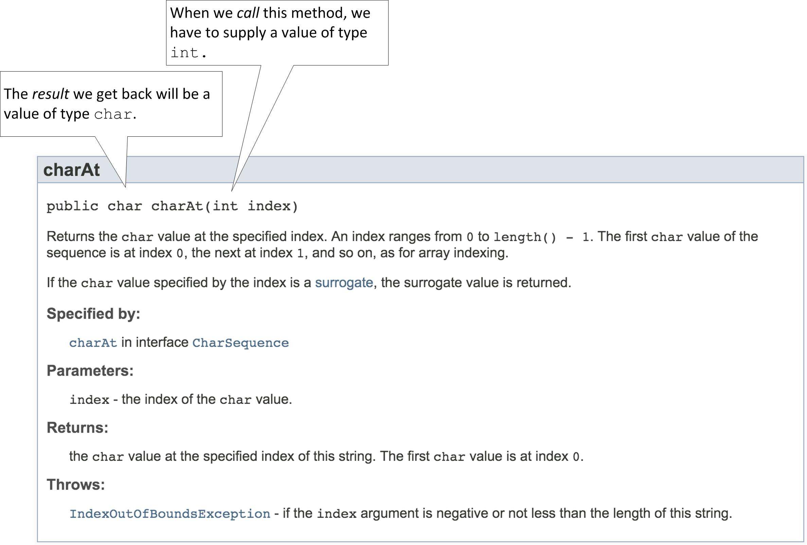

Java API
How did we know about the length method and how to use it? Well, the individuals who wrote the String class also published documentation on how the class may be used. In the documentation, they describe the API ("Application Programmer Interface") of the String class, which tells how Strings are constructed and what methods are available to our String instances.
- Go to: https://docs.oracle.com/en/java/javase/11/docs/api/java.base/module-summary.html
- Type "String" into the search box
- Click on "java.lang.String" in the result list
Start by scrolling down from the top of the String class documention page. Note there is some description, then a section "Field Summary", followed by "Constructor Summary", and finally, "Method Summary". The method summaries are always one-sentence descriptions of what the methods do. Click on the method name -- a link takes you to a more detailed description. Use the Back button to return.
Locate the description of the length method.
As you can see, String is not simple. You do not need to memorize any part of this documentation. However, you will refer to it frequently throughout your time as a Java programmer. There is a huge amount of information here, and many things that don't yet make any sense to us. Do not worry -- we don't have to understand it all now.
Other Methods
Let's explore other methods of the String class.
Look for a method named charAt, which returns a single character
from the string. Read its detailed description (ignoring details that don't make any sense yet).

In particular look at the first line as shown above.
- The method has a parameter
indexof typeint. In order forcharAtto perform its job you must specify an integer argument corresponding to this parameter. Below, the "Parameters" section provides a brief description of what it means. In this case, the argument indicates the position of the character you'd like to inspect. (The positions are numbered from the left, starting at zero.) - The method has a return value of type
char. This is the result we'll get when calling the method. Below, the "Returns" section provides a brief description.
Try this
- Add the following to your
StringTestclass:char theChar = message.charAt(0); System.out.println(theChar); theChar = message.charAt(1); System.out.println(theChar);
Try some other arguments besides 0 and 1. What is the largest index you can use without getting an error? - Print an uppercase version of
messageusing the methodtoUpperCase - Use the method
substringto extract just the first 5 characters ("Hello") frommessageand print it.
Try this too
In games and simulations, we usually need to have some randomness or unpredictability. Computers can't really do anything truly random, but there are ways to produce values that are seemingly unpredictable and appear to be random. (Computer scientists call such values pseudorandom.) In Java this is done with the classRandom.
To use it, you first construct an instance of the class Random:
Random rand = new Random();The
Random class has many methods for generating values.
Find the documentation in the Java APIs as you did for String. Random
is in the class java.util.
One of the most useful methods is
nextInt(int n), which returns a pseudorandom value in the range 0 through n - 1.
Create a class RandomTest in your lab2 package with a main method.
Add the statement
import java.util.Randomafter the package declaration. In the main method add some code like this:
Random rand = new Random(); System.out.println(rand.nextInt(6)); System.out.println(rand.nextInt(6)); System.out.println(rand.nextInt(6)); System.out.println(rand.nextInt(6));Try running it several times. You should see some values in the range 0 through 5.
Then, try replacing the first line as follows
Random rand = new Random(137);and run the main method several more times. What do you notice?
The literal number 137 you see above is called a "seed" for the random number generator. You can use any number you want. Any Random object constructed with the same seed is guaranteed to produce exactly the same sequence of values. (This is extremely useful for testing, or for reproducing the outcome of a simulation.)